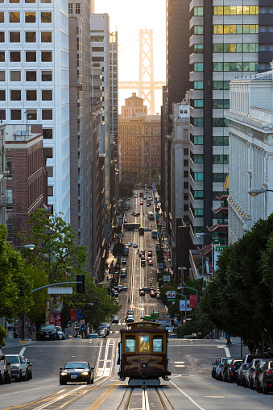
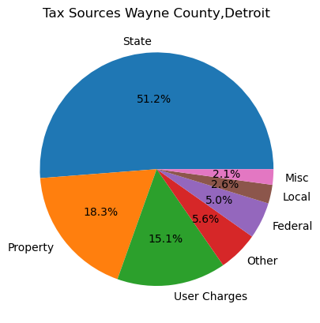

Tax incentives for mixed-use buildings including tax incentives for companies to move into the city itself.
Creation of better walkways and connecting corridors for citizens to use.
Better signage for both cars and pedestrians.
Investment into public transportation allowing people outside the city center to visit.
Creation of more green areas spread through the city.
Welcome To Detroit!
Detroit is a spirited town with an embracing personality for its residents. It holds a lot of firsts. A looot of firsts.
The first paved road, first individually assigned phone numbers, first state fair and even the first place an automatic
coffee maker was ever used. All things that supplement an "on the go" lifestyle. Detroit has always been home to some truly
innovative thinkers, and it still is!
However, residents say that although they love living in Detroit, the rising cost of living,
needs to come with improvements to public transit and public services, as well as a stronger job market.
Detroit still has one of the weakest public transit systems of any major city, and Detroiters are eager
for that to change. According to Michigan Advance, Detroit is "widely regarded as one of the nation's worst public transit systems, where
Detroit relies on "two unconnected and inadequate bus systems" that serve more than 4 million residents." Supported Study
A quote from a current resider:
I'm hoping that in the future, I can easily live in Detroit without a car — and I hope that's the case for many residents,...
While I use my car less and less, the public transportation options are still not sufficient to totally replace having my own vehicle.— --Reardon (current Detroiter)
Cost of living needs to equate to its worthability. Is it worth it to reside in a costly area with insufficient means to
get around with ease? In addition to, a county that has the highest car crash rates in all of Michigan (Wayne county = over 50,000 car crashes a year: contributing to 20% of the state's total). Supported Study
Short answer...NO...at least not enough.
Coming from a consumer standpoint, there needs to be incentives. There needs to be a stimulus on both ends for the
consumer (residers/Detroiters) and suppliers (city councilman, builders and land developers). "All walkable property types have the potential to generate returns as good as or better than less walkable properties,
...Developers should be willing to develop more walkable properties."
Supported Study Especially if the bottom line is "Money Talks"...and for our case "Money walks." It is a profit to be made all around. Increasing the well-being
of your Detroiters while increasing the economic health staus of the city where profits to be made are well more in your grasp than not, is a win-win. In addition, to the profitable tax revenue and personal profitable revenue
is a treasure worth reaching for.
Problem:
Detroit IS walkable in certain areas, but DISCONNECTS and becomes LESS walkable
sporadically throughout the city, which leaves GAPS in opportunities for TAX REVENUE for the city AND FINANCIAL GAINS for land developers.
Within these less walkable neighborhoods, there are also a lack of activites to engage in. This negatively impacts
population density on realms of residential, employment, office and retail space. All which that have a direct correlation to
improving walkability thus, improving economic status of the city. Detroit's Heat Map Walkability Index
Here is a heatmap showcasing walkability index of Detroit. The heart of Detroit, or downtown Detroit, is most walkable which showcases deep red. The black borderline is the whole city of Detroit / Wayne county. The areas surrounding are light blue, yellow and blue. These colors show the lack of walkability or pedestrian friendly areas in the city. The data was pulled and the map was created using data from the data catalog from U.S. Environmental Protection Agency - Walkability index (https://catalog.data.gov/dataset/walkability-index) |
The Benefits of a Walkable Town
Policy Suggestions

Benefits

The four cities chosen to compare are Detroit with a walkable score of 65/100, Cleveland (75/100 walk score), Baltimore (64/100 walk score), and Boston (99/100 walk score). Per these interactive graphs above, they showcase the similarities and contrast between the average of means of transportation taken per population on thier way to work. As you can see, in each city, the highest mean of transportation is "driving alone" where the lowest is walking and biking. As the means of transportation equates to thier walkability score, Boston with the highest walkable score has the highest means of transportation via walking and biking due to thier quality of a walkable town. Now Boston's car crash average is 4,432 a year, where as Baltimore is 17,888, Cleveland is 9,200 and Detroit is >50,000. Understnading these statistics in conjuction with this data, it butresses the fact that increasing the walkability of a location, increase the average of walking within that particular city, which in turns has a positive impact on increasing public transit use along with bicycle use all while decreasing total amount of car crashes per year in a highly populated city. While the Worked at Home category may skew the results for Baltimore and Boston, we can still see that public transport, bicycle, and walked are higher for those two cities.
Why is this important to understand?
Motor vehicle crashes cost American society $340 billion in 2019 revenue that can be saved and allocated for better use.Supported Study
This pie chart shows the tax sources for Wayne County (Detroit). It highlights the importance of increasing property values, which currently are one of the worst in the nation. If Detroit can create a denser, higher value city it should be able to increase overall tax revenues in coming years, enabling it to overcome the decades long tax revenue freefall that has previously occurred.
All In The Data
For the visualization above, it is comparing Employment Density and Walk Index.
It is noted that the regression line is slightly higher.This indicates
that as employment density increases, the walk index increases even moreso. Which boost economic activity
thus, promotes a higher demand in occupancy use and land use. This opening eases the bridge for land developers and builders to swoop in
and develop positive magic that lands money not only in the cities pockets, but theres'. The max capital gain for income in
Detroit is 15-20%. The average population is about 632,000 with about 3 people per household. Creating about 1.07 billion dollars in
opportunistic revenue that supports both parties; the consumer (Detroiters) and the investors (land developers, builders and city councilmen)
The relationship between Office Density and Walk Index, we can see the regression line continuing
to rise from the previous visualization, showing that as office density increases, walk index more
often than not will go also increase. High walkability cities like Boston, New York, San Francisco,
and Washington DC all have higher residential, employment and office density values that correlate
to high walkability.
In this visualization we are analyzing the relationship between Walk index and Residential Density,
we can see clearly that as residential density goes up that walk index tends to increase quite a bit as well.
Which is great due to Detroits' homes values have increased to an average of 20% in 2022;
Individual tax increases capped at 5% (the best cap rate is between 5-10%) still offering appropiate risk and GREAT return.
In our Bar graph, we have walk index and gross activity density which is housing units plus employment density on our bar graph,
with the y axis values being sorted by Office Density to demonstrate a correlation between these three values. As you can see the
high walkability cities in our dataset are mostly at the top, with New York, Boston, San Francisco, and Washington DC all showing
high walk index, gross activity density, and Office Density.
The graph shows there’s really no correlation between the counties National Walk index and their average temperatures as
Wayne County has the lowest score, but is the warmest in terms of average temperature out the four counties. The information proved
by the seaborne heat map lets us see it is more so how accessible walking is based on the cities infrastructure and temperature plays literally affect.
The graph shows the comparison of all the counties used for walkability. The comparison is based off of the Total Population for each county.
This clearly shows why we chose to compare to Detroit to the other cities because of how similar they are. We used the NWI,
Households Occupied, Workers, Total Employment & the Census Tract over the Total Population.
In this visualization, we are comparing the Gross Domestic Product (GDP) of New York, San Francisco, Chicago, Washington DC,
which all have a high walkability score along with a high GDP, as well as Detroit. Thriving Industry exists in each of the four
high walkability cities that are shown here. For example, in Chicago, you have a major economic hub, New York is a mecca of entertainment,
tech and finance. In Washington DC, our country's capital, you have a thriving economy driven by the private sector, there are many government
agencies, think tanks, as well as law firms which contribute to the city's high GDP. San Francisco is the home to a thriving tech industry,
and is also driven by the success and attraction of Silicon Valley. Detroit has the lowest GDP among all these cities, this could be attributed
to things like the decline of the auto industry, job loss, population decline, etc. This is why increasing walkability significantly and hopefully
increasing the city's GDP in the long run is so important to us, Detroit is a historic city that deserves and has the potential to be a hub and walkable
destination in it's own right.


Lets Connect